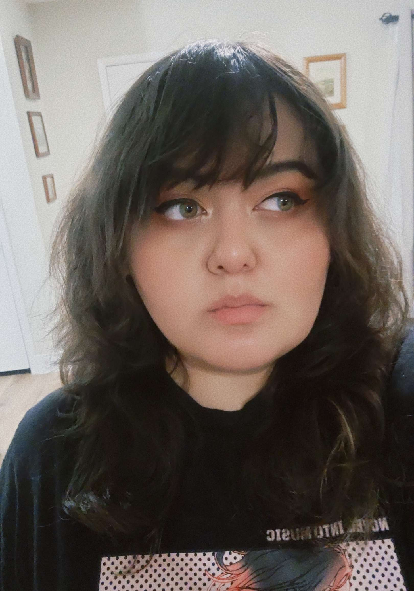

VICTORIA AREVALO
( SHE/HER )
Instagram: @vi.rens
About the Artist
Victoria is an artist with aspirations to become a creative director. Her love of art began in childhood, spending her days drawing and creating comics to share with friends. She pursued digital media art, inspired by her love for video games, hypertext fiction, and the wide range of creative work found only on the internet. She is especially drawn to narrative design and character design, combining her passion for storytelling with a strong attention to small, detail-driven elements that enrich lore. Her work often explores dark humor, blending morbid themes with whimsy and comedy to make difficult subjects more approachable. Her other favorite themes are finding beauty in the most mundane things in order to appreciate the little things in life more. Outside of digital media, Victoria has served as the vice president of Fresh Pressed, San Jose State's printmaker's guild, for two years. In this role, she has helped grow the club alongside fellow cabinet members and has led workshops teaching various printmaking processes. Her favorite method is risograph printing, which she appreciates for its vibrant colors and silly little imperfections. She also deeply appreciates zines and encourages everyone to make one for fun.
What You Leave Behind
What You Leave Behind is a game that measures the impact of humans after humanity has ceased functioning as we know it. The reasons why the world ended is anyone's guess, so what's stopping anyone from listening to one random person's dying plea? This game measures whether or not you would give to a pile of helpful items or take everything for yourself when there's no one there to stop you. Would you try to inject some good into a world for the sake of doing good, inspiring someone else to do the same? Or ensure no one else but you can benefit from those foolish to trust after everything crumbled down? What You Leave Behind allows you to experience what having morals when there is no reason to have them is like when faced with a choice that could potentially trigger others to follow your lead when they see what you left behind.